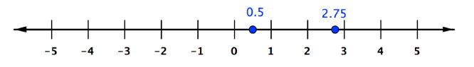
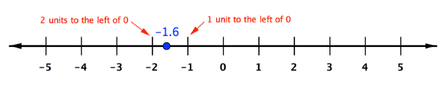
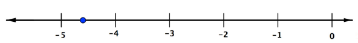
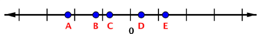
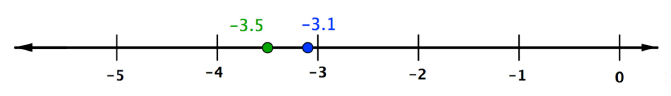
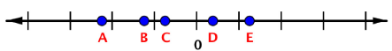

Chapter 1: Numbers
Section 1.11: Numbers
Learning Objective(s)
- Identify the subset(s) of the real numbers that a given number belongs to.
- Locate points on a number line.
- Compare rational numbers.
- Identify rational and irrational numbers.
Introduction
You've worked with fractions and decimals, like 3.8 and \(2\frac{1}{3}\). These numbers can be found between the integer numbers on a number line. There are other numbers that can be found on a number line, too. When you include all the numbers that can be put on a number line, you have the real number line. Let's dig deeper into the number line and see what those numbers look like. Let's take a closer look to see where these numbers fall on the number line.
Rational Numbers
The fraction \(\frac{16}{3}\), mixed number \(5\frac{1}{3}\), and decimal 5.33… (or \(5.\overline{3}\)) all represent the same number. This number belongs to a set of numbers that mathematicians call rational numbers. Rational numbers are numbers that can be written as a ratio of two integers. Regardless of the form used, \(5.\overline{3}\) is rational because this number can be written as the ratio of 16 over 3, or \(\frac{16}{3}\).
Examples of rational numbers include the following.
- 0.5, as it can be written as \(\frac{1}{2}\)
- \(3\frac{3}{4}\), as it can be written as \(\frac{11}{4}\)
- \(-1.6\), as it can be written as \(\frac{-16}{10} = -\frac{8}{5}\)
- 4, as it can be written as \(\frac{4}{1}\)
- \(-10\), as it can be written as \(\frac{-10}{1}\)
All of these numbers can be written as the ratio of two integers.
You can locate these points on the number line.
In the following illustration, points are shown for 0.5 or \(\frac{1}{2}\), and for 2.75 or \(2\frac{3}{4} = \frac{11}{4}\).

As you have seen, rational numbers can be negative. Each positive rational number has an opposite. The opposite of \(5.\overline{3}\) is \(-5.\overline{3}\), for example.
Be careful when placing negative numbers on a number line. The negative sign means the number is to the left of 0, and the absolute value of the number is the distance from 0. So to place \(-1.6\) on a number line, you would find a point that is \(|-1.6|\) or 1.6 units to the left of 0. This is more than 1 unit away, but less than 2.

Example 1
Place \(-\frac{23}{5}\) on a number line.
Solution
It's helpful to first write this improper fraction as a mixed number: 23 divided by 5 is 4 with a remainder of 3, so \(-\frac{23}{5}\) is \(-4\frac{3}{5}\).
Since the number is negative, you can think of it as moving \(4\frac{3}{5}\) units to the left of 0. \(-4\frac{3}{5}\) will be between \(-4\) and \(-5\).

Self Check A
Which of the following points represents \(-1\frac{1}{4}\)?

B.
Negative numbers are to the left of 0, and \(-1\frac{1}{4}\) should be 1.25 units to the left. Point B is the only point that's more than 1 unit and less than 2 units to the left of 0.
Comparing Rational Numbers
When two whole numbers are graphed on a number line, the number to the right on the number line is always greater than the number on the left.
The same is true when comparing two integers or rational numbers. The number to the right on the number line is always greater than the one on the left.
Here are some examples.
| Numbers to Compare | Comparison | Symbolic Expression |
|---|---|---|
| \(-2\) and \(-3\) | \(-2\) is greater than \(-3\) because \(-2\) is to the right of \(-3\) | \(-2 > -3\) or \(-3 < -2\) |
| 2 and 3 | 3 is greater than 2 because 3 is to the right of 2 | \(3 > 2\) or \(2 < 3\) |
| \(-3.5\) and \(-3.1\) | \(-3.1\) is greater than \(-3.5\) because \(-3.1\) is to the right of \(-3.5\) (see below) | \(-3.1 > -3.5\) or \(-3.5 < -3.1\) |

Self Check B
Which of the following are true?
- \(-4.1 > 3.2\)
- \(-3.2 > -4.1\)
- \(3.2 > 4.1\)
- \(-4.6 < -4.1\)
ii and iv
\(-3.2\) is to the right of \(-4.1\), so \(-3.2 > -4.1\). Also, \(-4.6\) is to the left of \(-4.1\), so \(-4.6 < -4.1\).
Irrational and Real Numbers
There are also numbers that are not rational. Irrational numbers cannot be written as the ratio of two integers.
Any square root of a number that is not a perfect square, for example \(\sqrt{2}\), is irrational. Irrational numbers are most commonly written in one of three ways: as a root (such as a square root), using a special symbol (such as \(\pi\)), or as a nonrepeating, nonterminating decimal.
Numbers with a decimal part can either be terminating decimals or nonterminating decimals. Terminating means the digits stop eventually (although you can always write 0s at the end). For example, 1.3 is terminating, because there's a last digit. The decimal form of \(\frac{1}{4}\) is 0.25. Terminating decimals are always rational.
Nonterminating decimals have digits (other than 0) that continue forever. For example, consider the decimal form of \(\frac{1}{3}\), which is 0.3333…. The 3s continue indefinitely. Or the decimal form of \(\frac{1}{11}\), which is 0.090909…: the sequence "09" continues forever.
In addition to being nonterminating, these two numbers are also repeating decimals. Their decimal parts are made of a number or sequence of numbers that repeats again and again. A nonrepeating decimal has digits that never form a repeating pattern. The value of \(\sqrt{2}\), for example, is 1.414213562…. No matter how far you carry out the numbers, the digits will never repeat a previous sequence.
If a number is terminating or repeating, it must be rational; if it is both nonterminating and nonrepeating, the number is irrational.
| Type of Decimal | Rational or Irrational | Examples |
|---|---|---|
| Terminating | Rational | \(0.25\) (or \(\frac{1}{4}\)) \(1.3\) (or \(\frac{13}{10}\)) |
| Nonterminating and Repeating | Rational | \(0.66\ldots\) (or \(\frac{2}{3}\)) \(3.242424\ldots\) (or \(\frac{321}{99} = \frac{107}{33}\)) |
| Nonterminating and Nonrepeating | Irrational | \(\pi\) (or \(3.14159\ldots\)) \(\sqrt{7}\) (or \(2.6457\ldots\)) |
Example 2
Is \(-82.91\) rational or irrational?
Solution
Answer: \(-82.91\) is rational, because it is a terminating decimal.
The set of real numbers is made by combining the set of rational numbers and the set of irrational numbers. The real numbers include natural numbers or counting numbers, whole numbers, integers, rational numbers (fractions and repeating or terminating decimals), and irrational numbers. The set of real numbers is all the numbers that have a location on the number line.
![A Venn diagram showing the sets of real numbers. The outermost circle is labeled Real Numbers. Inside it are two overlapping regions: a large circle on the left labeled Irrational Numbers containing pi, square root of 2, and square root of 7, and a large circle on the right labeled Rational Numbers containing 0.25 and 15 over 8 and 81 over 25. Inside the Rational Numbers circle is a smaller circle labeled Integers, inside which is a smaller circle labeled Whole Numbers, inside which is the smallest circle labeled Natural Numbers. The value 0.66 appears in the Rational Numbers circle outside the Integers circle.](images/mth111_1_11_6.png)
| Set | Description |
|---|---|
| Natural numbers | 1, 2, 3, … |
| Whole numbers | 0, 1, 2, 3, … |
| Integers | …, \(-3\), \(-2\), \(-1\), 0, 1, 2, 3, … |
| Rational numbers | numbers that can be written as a ratio of two integers — rational numbers are terminating or repeating when written in decimal form |
| Irrational numbers | numbers that cannot be written as a ratio of two integers — irrational numbers are nonterminating and nonrepeating when written in decimal form |
| Real numbers | any number that is rational or irrational |
Example 3
What sets of numbers does 32 belong to?
Solution
The number 32 belongs to all these sets of numbers:
- Natural numbers
- Whole numbers
- Integers
- Rational numbers
- Real numbers
Every natural or counting number belongs to all of these sets!
Example 4
What sets of numbers does \(382.\overline{3}\) belong to?
Solution
\(382.\overline{3}\) belongs to these sets of numbers:
- Rational numbers
- Real numbers
The number is rational because it's a repeating decimal. It's equal to \(382\frac{1}{3}\) or \(\frac{1{,}147}{3}\).
Example 5
What sets of numbers does \(-\sqrt{5}\) belong to?
Solution
\(-\sqrt{5}\) belongs to these sets of numbers:
- Irrational numbers
- Real numbers
The number is irrational because it can't be written as a ratio of two integers. Square roots that aren't perfect squares are always irrational.
Self Check C
Which of the following sets does \(-\frac{33}{5}\) belong to?
- whole numbers
- integers
- rational numbers
- irrational numbers
- real numbers
rational and real numbers
The number is between integers, so it can't be an integer or a whole number. It's written as a ratio of two integers, so it's a rational number and not irrational. All rational numbers are real numbers, so this number is rational and real.

Summary
The set of real numbers is all numbers that can be shown on a number line. This includes natural or counting numbers, whole numbers, and integers. It also includes rational numbers, which are numbers that can be written as a ratio of two integers, and irrational numbers, which cannot be written as the ratio of two integers. When comparing two numbers, the one with the greater value would appear on the number line to the right of the other one.
Exercises
Exercises to be added at a later date.